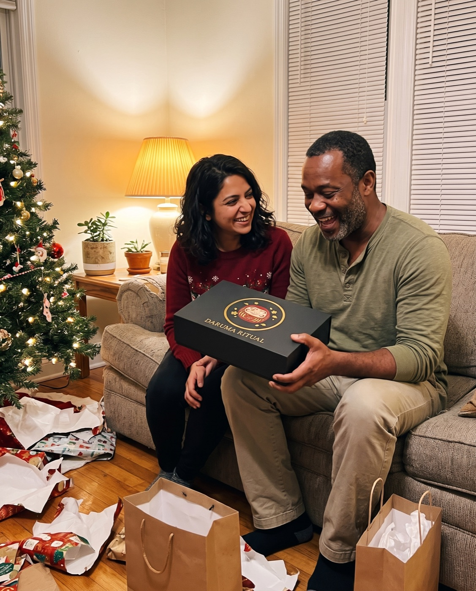
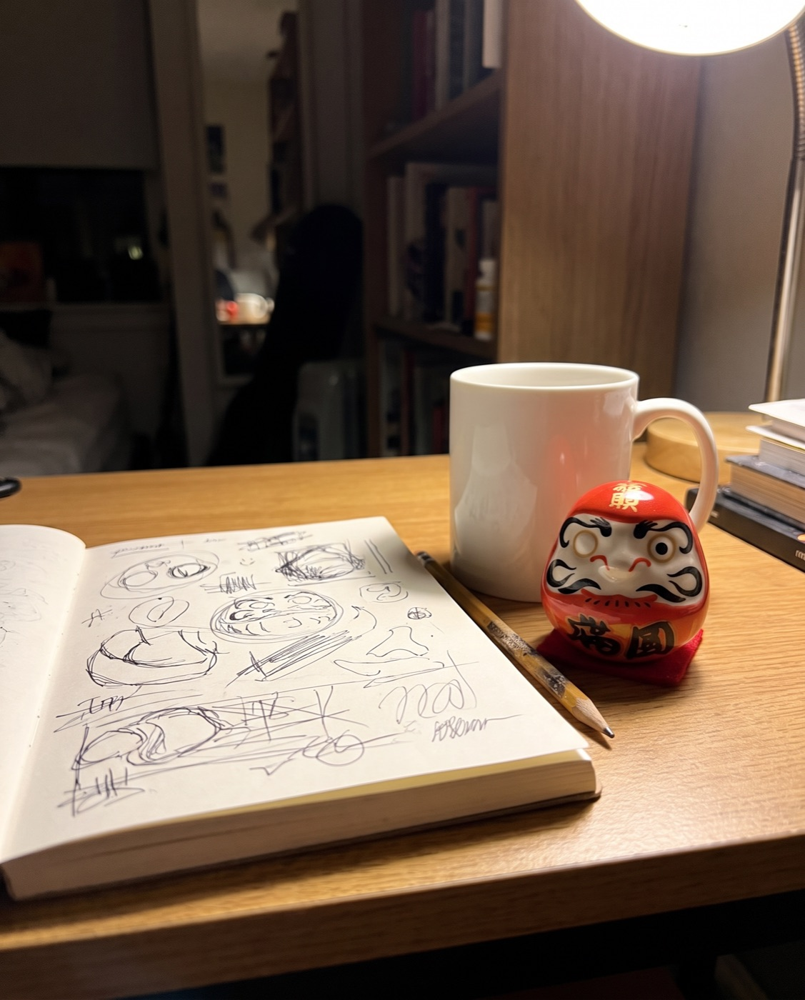
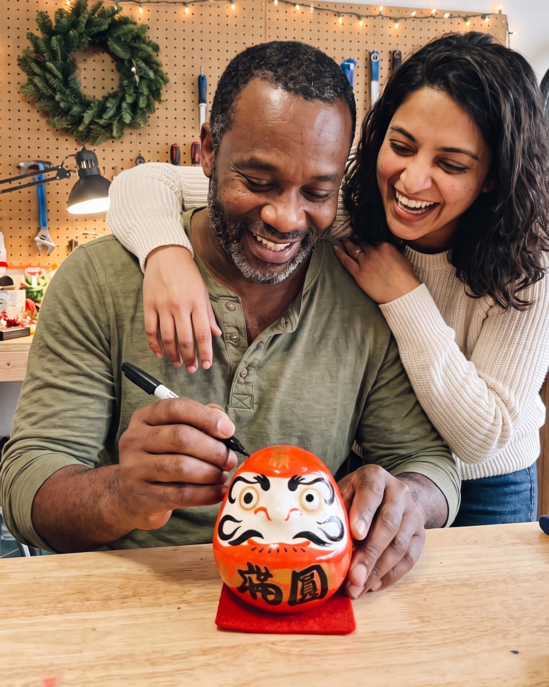
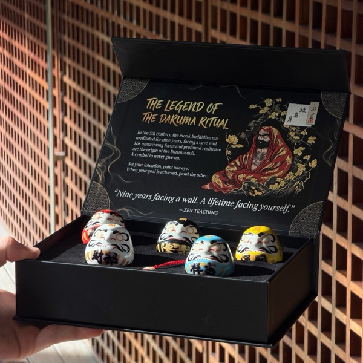

A Christmas story
“He’s Talked About Starting His Own Thing for 5 Christmases.” This Year I Gave Him a Doll With No Eyes.
A notebook full of sketches, five New Year’s resolutions, and the small Japanese ritual that finally put his idea somewhere he couldn’t ignore it.
A story written by Daruma Ritual to show how the ritual is used. The customer messages quoted on this page are real.

Every Christmas for five years, my husband said the same sentence somewhere between dessert and the dishes.
“Next year I’m going to do it.”
The “it” was a small bike repair shop. Not a store, not a loan, nothing dramatic. Just Saturdays in our garage, fixing old bicycles for people in our neighbourhood, the way his dad used to.
Marcus is not a dreamer who talks and never works. He’s the opposite. He works so hard at his day job that by Friday night there is nothing left for anything else. So the idea kept waiting.
1. The notebook
He has a notebook. I think every person with a someday plan has one.
His is full of pencil sketches: a wheel stand he wanted to build, a list of tools, prices he’d charge, the name he’d paint on the garage door. Some pages are dated four years ago.
Every few months I would find him at the kitchen table late at night, drawing in it. Then the notebook would go back in the drawer for another season.
Nobody ever forgets their dream. They just stop seeing it.
2. Why the usual things didn’t work
I had tried to help, in all the ways you’re supposed to.
- A New Year’s resolution, said out loud at dinner. Gone by February.
- A reminder on his phone. Swiped away every Saturday morning.
- A vision board I made him for his birthday. It’s behind the door of the spare room.
- Me, asking “so, the bike thing?” He hated that, and I don’t blame him.
None of it was wrong. It just all lived in places he didn’t look: an app, a drawer, a wall behind a door, my voice.
The idea had no weight. Nothing in the house said it was real.
3. A friend told me about a doll with no eyes
In November, a colleague of mine had a small red doll on her desk with one eye painted in. I asked about it, because it looked like it was staring at me.
She told me it was a Daruma, part of a Japanese New Year tradition that goes back about 400 years. You buy it with both eyes blank. When you choose your goal, you paint one eye. The second eye only goes on when the goal is done.
“So it watches you,” I said.
“It waits for you,” she said. “Different thing.”
The doll is modelled on Bodhidharma, a monk who, according to legend, meditated facing a wall for nine years. It has a weighted base, so if you knock it over it rocks back up. That’s why it goes with the old saying fall seven times, rise eight.
I ordered a set that night.
Official Daruma Ritual store · Free tracked shipping worldwide · 30-day returns
4. Christmas
I wrapped it in plain paper and put it at the very back of the tree, after all the practical presents.
Inside the black box there were five small ceramic Daruma in different colours, a card with the legend on it, and a little chiming keychain. Marcus read the card twice. Then he looked at me like he knew exactly what I was doing.
“This is about the bikes,” he said.
“It’s about whatever you want,” I said. “But yes.”
He laughed. He didn’t say “next year” that night.
5. New Year’s Day
On January 1st, at the kitchen table, he picked the red one. Red is the classic colour, for fortune and luck.
He wrote one sentence on the back of the ritual card: Open the garage on Saturdays by spring. Then he painted the first eye with the marker from our junk drawer. (There’s no marker in the box; any black one works.) Tradition says you paint the doll’s own left eye first, which is the one on your right as it faces you.
It took about ten seconds. It felt bigger than that.
6. Where we put it
This is the part I think matters most. He didn’t put it on a shelf in the living room. He put it on the little desk where the notebook lives.

So now the idea had a face. Every time he sat down to answer emails, a small red doll was looking at him with one eye.
I didn’t have to ask “so, the bike thing?” anymore. Something else was asking.
7. February, the month it usually dies
Every other year, February is where it ended. This February, he spent two Sundays clearing the garage. Not a business plan. Just boxes, a broom and a trip to the dump.
In March he built the wheel stand from the notebook sketch. In April he fixed our neighbour’s daughter’s bike, for free, “to practise”.
I want to be clear about something, because I know how these stories sound. The doll didn’t fix a single bike. Marcus did. What the doll did was sit there, every single day, refusing to let the idea go back in the drawer.
8. December
By the next Christmas, the garage door was open most Saturdays. Neighbours dropped off bikes with notes taped to the handlebars. He’s still at his day job; it’s still a small thing. It’s also real now, and it wasn’t for five years.
On the last Saturday before Christmas, he brought the red Daruma down from the shelf, put it on the workbench, and painted the second eye.

Then he picked up the yellow one and asked me what mine was going to be.
If you’re buying for someone with a “someday”
Here is what I’d tell any partner, parent or friend thinking about this gift.
- Day 1Choose one goal. Write it down and paint the first eye: the doll's own left, which is the one on your right as it faces you. Any black marker works (one isn't in the box).
- Every day afterThe Daruma sits where you'll see it: a desk, a shelf, a nightstand. One eye open, waiting.
- Week 4Look at it and ask yourself one honest question: what did I do this week toward the goal?
- The day it's donePaint the second eye. Keep it as a record, or start again with a new goal.
This is for you if…
- They’ve talked about the same idea for years
- They’re practical and hate “self-help” gifts
- You want a gift that matters in January, not just on Christmas morning
- You want something you can do together on New Year’s Day
Skip it if…
- You want them to feel pushed or judged
- They don’t like objects on their desk
- You need a gadget or something to unwrap and use instantly
The gift isn’t really the doll. It’s you saying, without a speech: I believe you’ll actually do it.
Official Daruma Ritual store · Free tracked shipping worldwide · 30-day returns
What other people wrote after giving one
Messages customers sent to Daruma Ritual, quoted word for word.
“I was pleased to gift my two sets, one to my therapist who has guided me over the years and another to a young woman who introduced me to the concept. Both were utterly delighted! I also love the gentle chiming of my daruma charm on my purse.”
“Finally I was able to perform our first ritual with my daughter and her husband. I will be purchasing more sets to give to my other children. … this was a good way to have them set goals to focus on all of the good things in their lives.”
“I received my Daruma a few weeks ago and it has become a daily source of motivation for me. It reminds me to stay focused on my goals and to keep showing up. … Thank you for creating something so meaningful!”
What’s in the box, and what it costs
The set I gave Marcus has five colours, so it covers more than one goal, or more than one person. We’ve since given the white one to my sister.

1 Premium Set5 Daruma + 1 chiming keychain
10 Daruma + 2 keychains + $20 gift card free
15 Daruma + 3 keychains + $20 gift card free
Each set: 5 ceramic Daruma, matte-black magnetic box, legend & ritual cards. Free tracked shipping.
How to tell a real ritual set from a souvenir
- Both eyes arrive blank. That's the whole point: you paint them.
- Each colour carries a meaning, so you can match a doll to a goal.
- It comes with the story and the ritual written down, so the person receiving it knows what to do.
- It's weighted at the base, so it rocks back up when pushed over.
Official Daruma Ritual store · Free tracked shipping worldwide · 30-day returns
Questions I had before ordering
What exactly is in a set?
Five ceramic Daruma in red, white, black, yellow and blue, a matte-black magnetic gift box with a velvet tray, the legend & ritual cards, and a chiming Daruma keychain.
Is a pen or marker included?
No. Any black marker or brush pen works for the eyes.
Do I need to know anything about Japanese culture?
No. The ritual card in the box explains the steps in a minute.
How does shipping work?
Shipping is free and tracked to every country. The delivery estimate is shown at checkout; international post is slower in December, so order early for Christmas.
What if it's not right?
You have 30 days after it arrives to request a return.
Order early for Christmas: international post is slower in December, and your delivery estimate is shown at checkout.